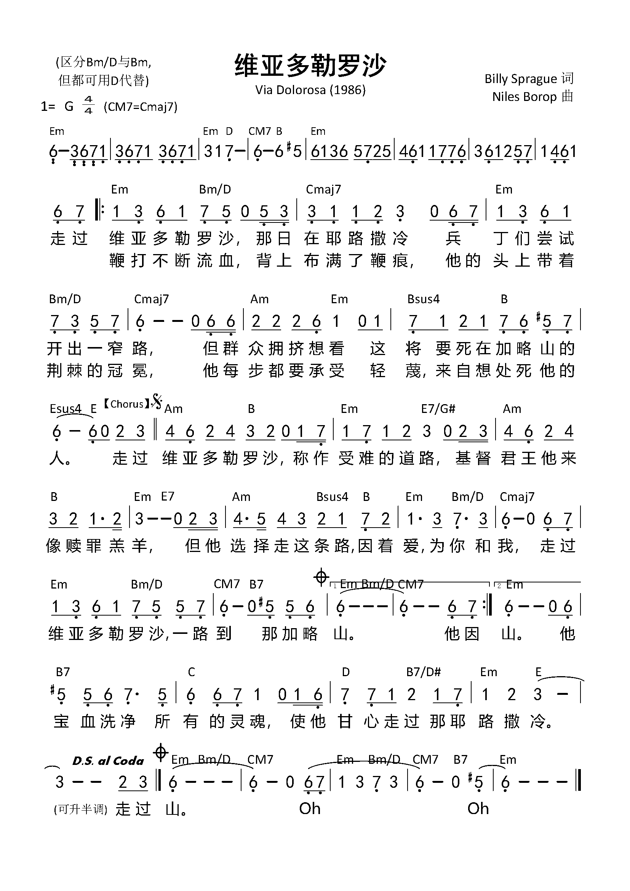
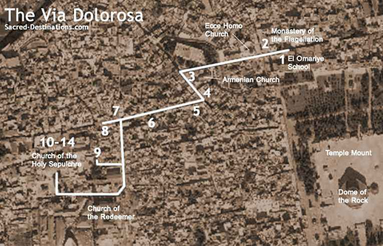

1012 0939 Via Dolorosa 维亚多勒罗沙
|
|
|
|
Down the Via Dolorosa in Jerusalem that day
The soldiers tried to clear the narrow street
But the crowd pressed in to see
The man condemned to die on Calvary
He was bleeding from a beating, there were stripes
upon His back
And He wore a crown of thorns upon His head
And He bore with every step
The scorn of those who cried out for His death
Down the Via Dolorosa called the way of suffering
Like a lamb came the Messiah, Christ the King
But He chose to walk that road out of
His love for you and me
Down the Via Dolorosa, all the way to Calvary
Por la Vía Dolorosa, triste día en Jerusalén
Los soldados le abrían paso a Jesús
Mas la gente se acercaba
Para ver al que llevaba aquella cruz
Por la Vía Dolorosa, que es la vía del dolor
Como oveja vino Cristo, rey, Señor
Y fue Él quien quiso ir, por su amor por ti y por
mí
Por la Vía Dolorosa al Calvario y a morir
The blood that would cleanse the souls of all men
Made its way to the heart of Jerusalem
Down the Via Dolorosa called the way of suffering
Like a lamb came the Messiah, Christ the King
But He chose to walk that road out of His love for
you and me
Down the Via Dolorosa, all the way to Calvary
|
走過維亞多勒羅沙，
那日在耶路撒冷，
兵丁們嘗試開出一窄路。
但群眾擁擠想看，
這將要死在加略山的人。
祂因鞭打不斷流血，
背上佈滿了鞭痕，
祂的頭上戴著荊棘的冠冕。
祂每步都要承受，
輕蔑來自想處死祂的人。
走過維亞多勒羅沙，
稱做受難的道路，
基督君王祂來像贖罪羔羊。
但祂選擇這條路是因著愛，
為你和我。
走過維亞多勒羅沙，
一路到那加略山。
祂因鞭打不斷流血，
背上佈滿了鞭痕，
祂的頭上戴著荊棘的冠冕。
祂每步都要承受，
輕蔑來自想處死祂的人。
走過維亞多勒羅沙，
稱做受難的道路，
基督君王祂來像贖罪羔羊。
但祂選擇這條路是因著愛，
為你和我。
走過維亞多勒羅沙，
一路到那加略山。
祂寶血洗淨，所有的靈魂，
使祂甘心走過，那耶路撒冷。
走過維亞多勒羅沙，
稱做受難的道路，
基督君王祂來像贖罪羔羊。
但祂選擇這條路是因著愛，
為你和我。
走過維亞多勒羅沙，
一路到那加略山⋯。
http://www.sitw.org/Lyrics/SWT_Via-Dolorosa.htm
維亞多勒羅沙 Via Dolorosa
曲：Billy Sprague and Niles Borop
編：Ken Barker
原詞：Billy Sprague and Niles Borop
粵詞：梁臻階
https://choirdb.hk/product/%E7%B6%AD%E4%BA%9E%E5%A4%9A%E5%8B%92%E7%BE%85%E6%B2%99-via-dolorosa/ |
|

https://www.iwtfly.com/wei-ya-duo-le-luo-sha-via-dolorosa-he-xian-jian-pu.html
|
|
|
|
 Via Dolorosa 维亚多勒罗沙
Via Dolorosa 维亚多勒罗沙

Neil Stavem on February
24, 2014
He was a popular Christian recording artist in the 80’s and 90’s, but his
music took on new depth after several losses, including his fiancée and his
grandmother. Today, guest Host Bill Arnold talks with recording artist and
author Billy Sprague about
his life, his music, including “Via Dolorosa,” and his book .
“Rose is with Jesus.”
With those four words, Billy’s world drastically changed. His fiancée was
killed in a car accident and he was forced to learn “the landscape of grief.” He
needed to wrestle with the hard questions – does this faith work? Why does God
take those we love?
Bill, George, and Billy unpack a number of issues surrounding grief:
• How to comfort someone after they suffer loss
• What to say vs. what not to say
• The meaning behind the phrase, “Keep tying your shoes”
• How grief affects us at different seasons and ages
Billy says his heart healed through “many acts of kindness, and the Holy
Spirit.” When you’re comforting someone, don’t take the shortcut to comfort.
Consider concrete acts of kindness, bringing over a meal, sending a card with a
gift card included, or offering to watch their children rather than simply
sending a text message.
“It’s easier when you get to turn a page, but sometimes life turns the page
for you.”
Billy calls us to hold fast to Christ and His Word in the midst of changes.
We can either get down when things change, or we can “stay connected” to our
highest calling. God’s entrusted something to you, a skill, a calling, a family
– and your job is to steward that through every season of life until He takes it
back or calls you home. Billy also calls us to keep dreaming – life is short,
and God is with you. What do you want to do? What is your gifting? Find it, use
it, and share it for His glory.
Highlight – Via dolorosa
https://myfaithradio.com/2014/via-dolorosa/
https://zh.wikipedia.org/wiki/%E7%B6%AD%E4%BA%9E%E5%A4%9A%E5%8B%92%E7%BE%85%E6%B2%99


{kind=link}
{kind=link}
{kind=link}
{kind=link}